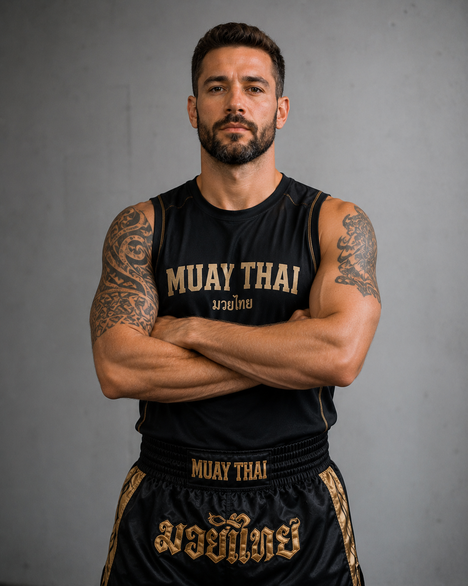

Farkas Márton
Farkas Márton közel 20 éve foglalkozik Muay Thaijal, és több évet töltött thaiföldi edzőtáborokban. Kezdő és középhaladó óráin nagy hangsúlyt helyez az alapállásra, a csípő használatára, a rúgástechnikára és a biztonságos clinchmunkára. Türelmesen javítja a mozdulatokat, és minden tanítványnál ügyel arra, hogy a technika megelőzze az erőt. Edzései intenzívek, mégis jól követhetők azok számára is, akik most kezdik a sportot. Célja, hogy tanítványai stabil alapokkal és magabiztos mozgással fejlődjenek tovább.